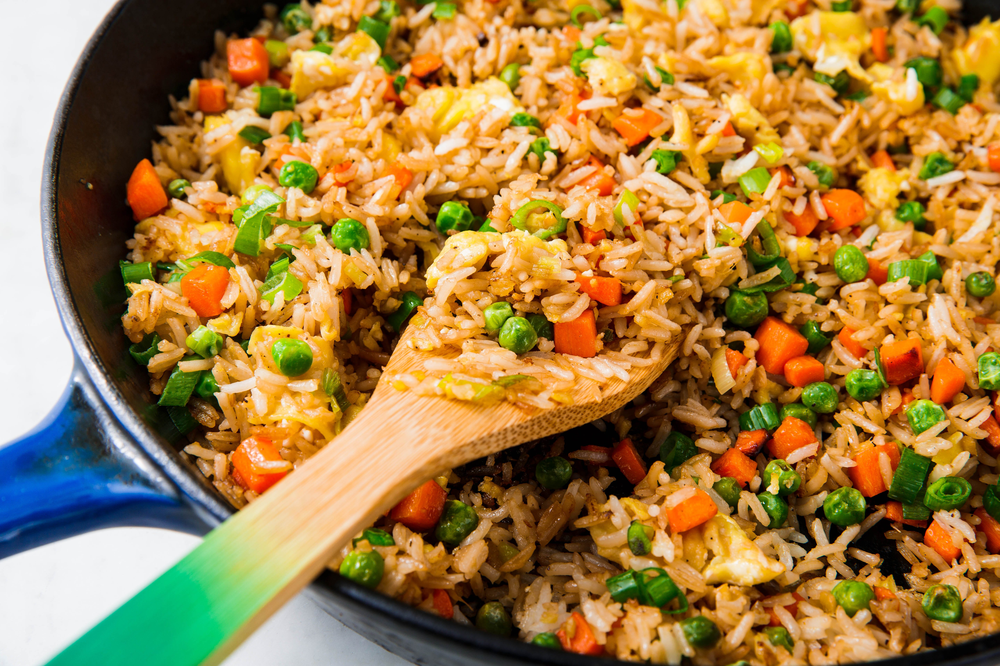

Fried Rice Recipe
⬅Home

Description
Fried rice is a versatile and flavorful dish that combines cooked rice with a variety of ingredients, such as vegetables, proteins, and seasonings. It is a popular choice for using up leftover rice and can be customized to suit different tastes and dietary preferences.
Ingredients
- ⅔ cup chopped baby carrots
- ½ cup frozen green peas
- 2 tablespoons vegetable oil
- 1 clove garlic, minced, or to taste (Optional)
- 2 learge eggs
- 3 cups leftover cooked and chilled white rice
- 1 tablespoon soy sauce, or more to taste
- 2 teaspoons sesame oil, or to taste
Steps
- Gather all ingredients
- Heat vegetable oil in a large skillet or wok over medium-high heat.
- Push the rice to the side of the pan and scramble the eggs in the center.
- Add the baby carrots and green peas to the pan and stir-fry for 2-3 minutes.
- Add the cooked rice, soy sauce, and sesame oil to the pan.
- Stir everything together until well combined and heated through.